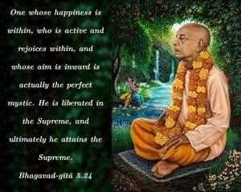
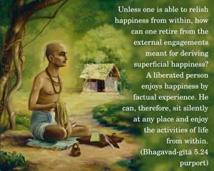
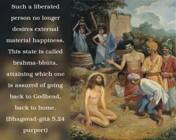

One whose happiness is within, who is active and rejoices within, and whose aim is inward is actually the perfect mystic. He is liberated in the Supreme, and ultimately he attains the Supreme.



Unless one is able to relish happiness from within, how can one retire from the external engagements meant for deriving superficial happiness? A liberated person enjoys happiness by factual experience. He can, therefore, sit silently at any place and enjoy the activities of life from within. Such a liberated person no longer desires external material happiness. This state is called brahma-bhūta, attaining which one is assured of going back to Godhead, back to home.